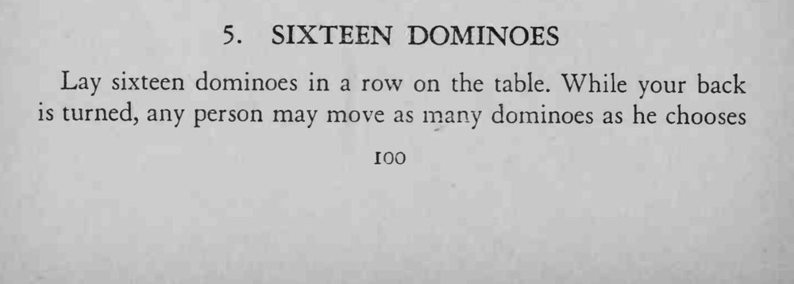
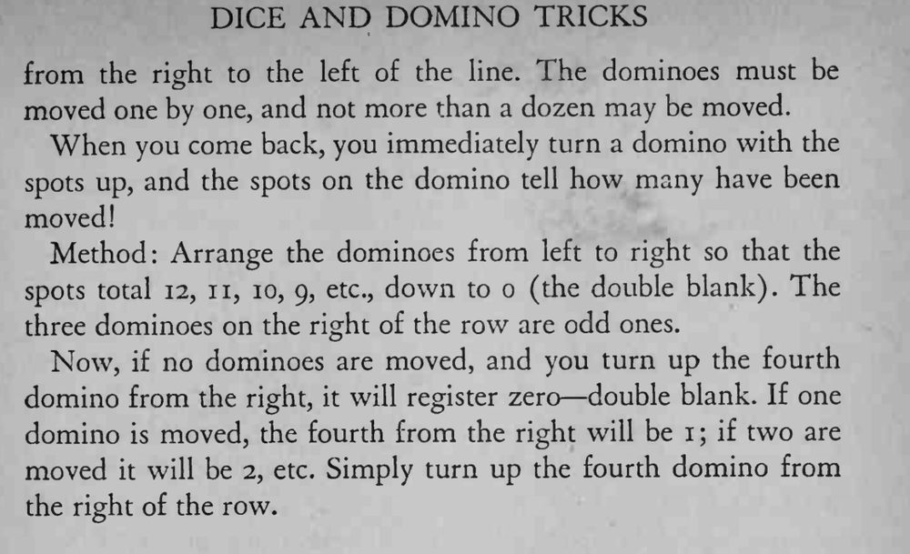

观众背对魔术师，把若干张骨牌从右端逐张移到左端；魔术师回来翻一张牌，牌面点数就说出移了几张。
排列时点数必须严格递减，翻第四张时按牌面点数直接报数即可。


Lay sixteen dominoes in a row on the table. While your back is turned, any person may move as many dominoes as he chooses from the right to the left of the line. The dominoes must be moved one by one, and not more than a dozen may be moved. When you come back, you immediately turn a domino with the spots up, and the spots on the domino tell how many have been moved! Method: Arrange the dominoes from left to right so that the spots total 12, ii, 10, 9, etc., down to o (the double blank). The three dominoes on the right of the row are odd ones. Now, if no dominoes are moved, and you turn up the fourth domino from the right, it will register zero double blank. If one domino is moved, the fourth from the right will be i if two are moved it will be 2, etc. Simply turn up the fourth domino from the right of the row.